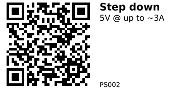

5V 3A Buck Converter (Fixed 5V) — PS002¶
Topology: Buck (step-down)
Chip family (common): 4R7
Description¶
DC-DC Buck Converter Module Adjustable Outputs Buck Converter Board 5V-30V To 3.3V 5V 9V 12V for Car Motorcycle Battery Charging Features:
1.Easy Installation: This step-down power module is designed for easy installation directly onto printed circuit boards, providing power to specialized integrated circuits (ASIC), digital signal processors (DSP), microprocessors, memory units, field-programmable gate arrays (FPGA), and other digital or analog loads.the power supply setup for your electronic components with a hassle-free installation process. 2.Wide Applicability: Suitable for various scenarios, this buck power supply module can be used in a wide range of applications, providing power to different types of specialized circuits or devices.Enjoy the versatility and flexibility of powering multiple devices, ensuring efficient performance in diverse settings. 3.Compact Size: With its small and compact form factor, this buck converter module offers convenience in terms of size and ease of use.Its compact design allows for seamless integration into different systems or device configurations. 4.High-Quality Craftsmanship: Built with precision and using high-quality materials, this outputs buck converter board boasts excellent durability and a long lifespan.Trust in the reliable performance and longevity of this module, ensuring consistent power supply for your devices. 5.Maximum Conversion Efficiency: With a conversion efficiency of up to 96%, this voltage regulator module ensures minimal power loss during the voltage step-down process.Experience optimal energy utilization and reduced heat generation, maximizing the efficiency of your power supply system.
Specification: * Origin: Mainland China * Type: Voltage Regulator * Condition: New * Model Number: Step Down Converter Board Module * Input Voltage: 5v~30v (Must Be Higher Than The Output Voltage) Preferably Below 28v. * Output Voltage: 3.3v/5v, Other Voltage Values Can Be Customized. * Output Current: 3a (Max) Normal 1.61.8a Over Plus Heat Sinking * Conversion Efficiency: 96% (Maximum) * Output Ripple: <30mv * Output Accuracy: ±0.1v * No-Load Current: <1ma * Operating Temperature: -40℃~+85℃ * Operating Humidity: 20%~90 * Size: 17124mm(LWH) * Pcb Layers: 2 Layer Board * Shutdown Function: Not Supported * Heat Dissipation Mode: Natural Heat Dissipation * Installation: Wiring * Whether With Isolation: Without Isolation * Production Process: Machine Labeling, Reflow Soldering * Design Aging Standard: 720 Hours Without Failure * Factory Aging Standard: 72 Hours Without Failure * Service Life: 30,000 Hours Without Failure (Output Current Does Not Exceed The Rated Value) * Inspection Standard: All Test (Factory Test + Storage Test) * Output Voltage: 3.3v/5v/9v/12v * Product Size: 17.00x12.00x4.00mm/0.67x0.47x0.16inch * This power supply module is a power supply that can be directly mounted on a printed circuit board and features a power supply for application-specific integrated circuits (ASICs), digital signal processors DSPs, microprocessors, memories, field-programmable gate arrays (FPGAs), and other digital or analog loads.
Note: 1. Input voltage preferably below 28V. 2. Normal current 1.6-1.8A over please add heat sink.
Due to the different monitor and light effect, the actual color of the item might be slightly different from the color showed on the pictures. Thank you! Please allow 1-2cm measuring deviation due to manual measurement.
Link: AliExpress
QR for printing will appear here after you run the script:
